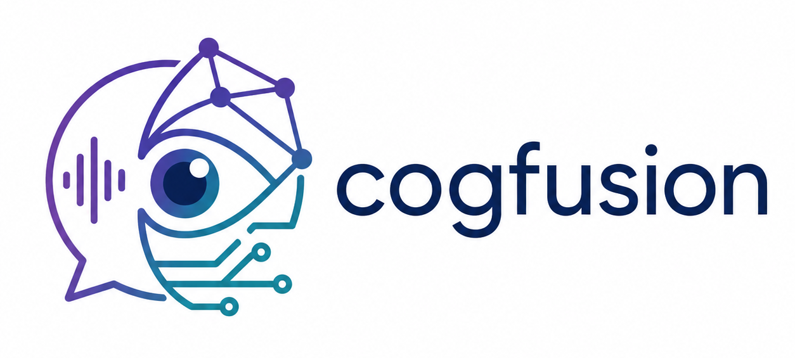

Affective Computing
Machine perception and interpretation of human affect in realistic settings.

A newly established lab exploring how cognition, perception and learning can be fused to build practical, reliable and human-centered AI systems.
Connect with CogFusionCogFusion is a newly set up research lab at SRM University–AP. At this stage, the lab is intentionally broad and exploratory, bringing together complementary directions in perception, language, learning and responsible AI.
Our focus is on research questions that can contribute methodologically while still remaining connected to real-world applications and human-centered intelligent systems.
Machine perception and interpretation of human affect in realistic settings.
Fusing visual, language and contextual information into unified intelligent systems.
Grounded language systems, retrieval-augmented generation and practical NLP applications.
Super-resolution and visual refinement that preserve task-relevant semantic information.
Fairness, robustness and responsible learning for diverse populations and deployments.
Understanding learning mechanisms and exploring alternative formulations of modern machine learning.
For research collaboration, student projects or academic discussions, use the contact form and select the most relevant purpose for your message.